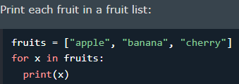

A for loop is used for iterating over a sequence (that is either a list, a tuple, a dictionary, a set, or a string).
This is less like the for keyword in other programming languages, and works more like an iterator method as found in other object-orientated programming languages.
we can execute a set of statements, once for each item in a list, tuple, set etc.
Syntax
for *variables in iterator: (1 or set of variables separated by comma)
statement


The break Statement
With the break statement we can stop the loop before it has looped through all the items:

The continue Statement
With the continue statement we can stop the current iteration of the loop, and continue with the next:

The range() Function (check Data Types->Collection Data Types->Sequence Types->Range)
To loop through a set of code a specified number of times, we can use the range() function
The range() function returns a sequence of numbers, starting from 0 by default, and increments by 1 (by default), and ends at a specified number.(end number is not included)
 ->(0-5)
->(0-5)
 ->(2-5)
->(2-5)
 ->(2-29, 2,5,8, 3 step at a time)
->(2-29, 2,5,8, 3 step at a time)
Else in For Loop
The else keyword in a for loop specifies a block of code to be executed when the loop is finished:

Note: The else block will NOT be executed if the loop is stopped by the break keyword
Nested Loops
A nested loop is a loop inside a loop.
The "inner loop" will be executed one time for each iteration of the "outer loop":

The pass Statement
for loops cannot be empty, but if you for some reason have a for loop with no content, put in the pass statement to avoid getting an error.